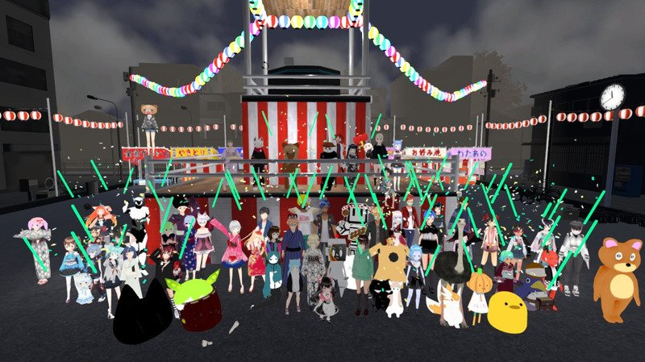
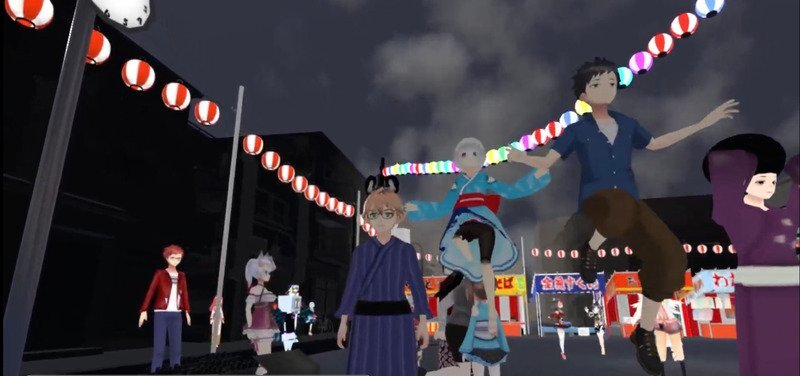
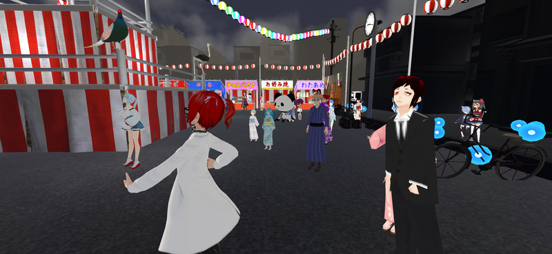
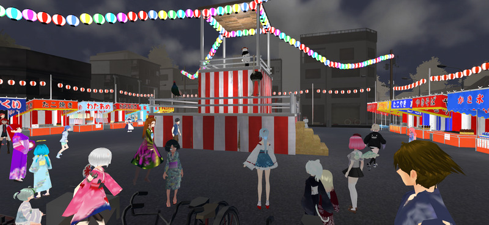
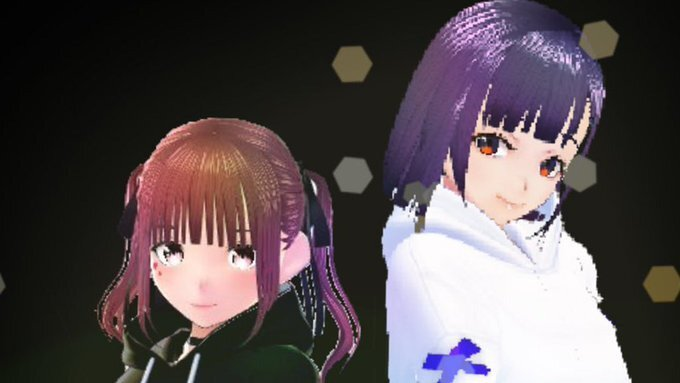
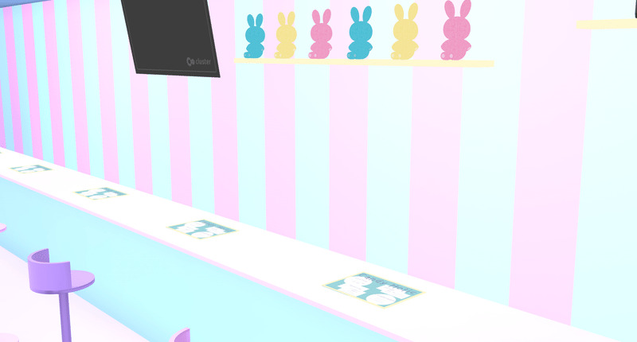
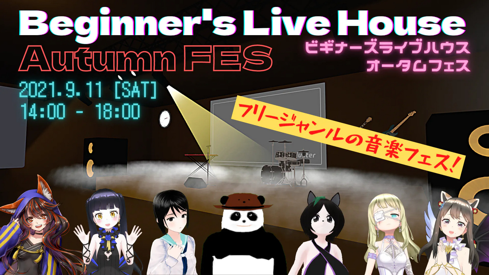
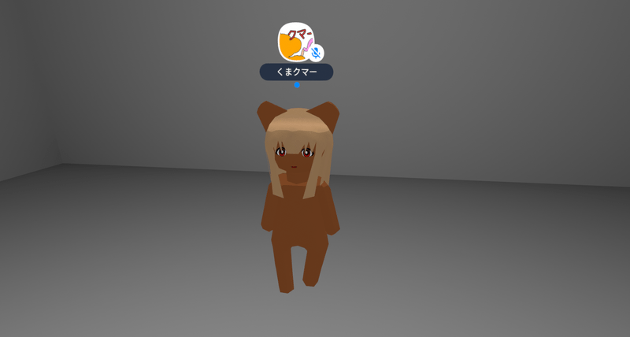
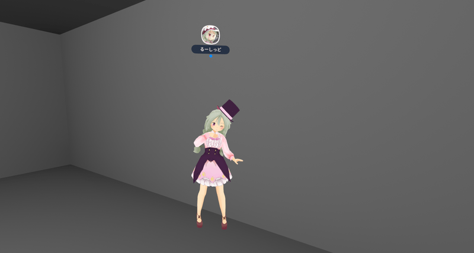

2021年8月27日に熊猫土竜さん主催の納涼大盆踊り大会が開催されました。

この盆踊り大会では、日本各地の盆踊り音頭から、クラスターではご存知の歌手の歌あり、またDJ、VJも集まり大盛況の中、終わりを迎えました。
夏はクラスター内でも規模を問わず音楽イベントがたくさん開催されましたが、今回の盆踊り大会は、その中でも異色な盛り上がりを見せていたのではないでしょうか。
参加された人達は好きなように踊り、並んでいた夜店で番頭したり、好きな浴衣をまとって参加されていたりと、普段は音楽イベントには来ない層まで巻き込んでの本当に盆踊りに来たかの様な暖かく楽しいイベントでした。
本イベントはのべ約650人もの人が参加したとの発表がありましたが、注目すべき点はこのイベントがVR上で行われた事であり、それがスマートフォンや対応されているタブレットから参加できるこのcluster内で行われ、それは日本各地だけでなく、インターネットが繋がっていれば世界各地から参加できると言う点にあると思います。
この日本独自の盆踊りと言う文化に参加できると言う事は非常に意義深い事だったのではないでしょうか。
この夜のTwitterはこの祭りを楽しんでるツイートで溢れていました。

今回のこの納涼大盆踊り大会のプログラムの「盆踊り」コーナーでは日本各地の音頭が流れ、それからDJに渡し、盛り上げる予定だったのですが後半部分に差し掛かると、主催者である熊猫土竜さんからコメントが入ります。
それは東日本大震災で被害を受けた地区がまだ復興途中である事、その為にそこに故郷があり戻れない人もいる事を現地の画像をスクリーンに映しながらの内容でした。
そこから福島県、双葉町の盆踊りが震災から10年の時を超えて流れ始め、そのまま東日本復興メドレーへと繋がっていきます。


そうやって始まった震災復興メドレーでも参加された人達が楽しそうに、そして自由に踊っている姿が熊猫土竜さんのYouTubeでも確認出来ます。
このVR/clusterにて行われた清涼大盆踊り大会はただ楽しいだけではなく、私達の文化を体験し、それを受け継ぐ事も可能と言う事を提示したイベントだったのではないでしょうか。
最後にこのイベントに参加された1人のツイートから。
「復興の想いを込めて地元の盆踊りを流してくれてありがとう。」
(9001)
2021年8月13日(土)22時～8月15日(日)22時まで開催されたcluster公式イベント「Cluster GAMEJAM2021in SUMMER」。
お題のテーマに沿って48時間以内でゲームワールド制作に挑戦するユーザー参加型イベントですが、今年も大いに盛り上がりを見せ、総参加者数はなんと600人を超えました！
そして8月22日(日)、たくさんの応募ワールドの中から選ばれた受賞作品の結果発表が行われました。
さまざまな部門別に賞および景品が多数用意されましたが、そのうち「総合大賞」と「各スポンサー賞」を受賞したゲームワールドをご紹介いたします。
◆総合大賞
ワールド名：Step Hopper
チーム名：剥 さん
このワールドは、砲台の向きを変えたりギミックを発動させたりしながら、弾でターゲットを破壊しステージをクリアする頭脳派パズルゲームです。ステージを進むごとに難易度が徐々に上がっていく感じが非常に楽しく、一人ではもちろん複数人の協力プレイでも楽しめるおすすめのワールドです！
◇アンリミテッドパフォーマンス エナジーZONe賞
ワールド名：HERO-撃って！舞って！！跳べ！！！
チーム名：サイ さん
◇Mark-on賞
ワールド名：地球へ...～地球還跳躍譚～
チーム名：楽園が見たい さん
◇Luppet賞
ワールド名：空遮る浮島
チーム名：大田マト＆〼医 さん
◇チート薬師のスローライフ賞
ワールド名：センター・オブ・ジ・アーク ～呪われし像の魔宮～
チーム名：リヴァイアさん延長戦 さん
◇raytrek賞
ワールド名：海賊ハンター
チーム名：Linx さん
◇デジタルハリウッド大学賞
ワールド名：田んぼのある生活
チーム名：おにさわランド さん
◇サンワサプライ賞
ワールド名：センスDeアスレ
チーム名：烏丸神社社務所 さん
◇HTC NIPPON賞
ワールド名：望-HOPE-
チーム名：Merman Wolf Gang!! さん
◇KOTOBUKIYA賞
ワールド名：HOP STEP ESCAPE
チーム名：ConeSoldier さん
◇Unity Japan賞
ワールド名：橋わたり HASHIWATARI
チーム名：AyariLabo さん
以上受賞されたみなさん、制作お疲れ様でした＆受賞おめでとうございました！
力作揃いの受賞ゲームワールド、ぜひ遊びに行ってみましょう！
（紅花）
今回、Clusterに新アイドルが誕生した。その名は
【えむかける-MX-】
ぷるたんさんがプロデュースめぐめぐさん、逢坂みらさん主体のメンバー構成で今後の活動やきっかけなど
インタビューしてみました。
Q.始めようと思ったきっかけは？
A.きっかけはVTuberへの憧れからです。現実では難しい夢もclusterなら叶う！と思い、アイドルを始めました☆
Q.これからの活動内容は？
A.活動内容は、主に配信ですが、イベント等のお仕事のご依頼は随時募集しています！ご依頼は公式Twitterか、ぷるたんPまで！
公式Twitter
@MXmiramegu
Q.えむかける-MX-の名前の由来は？
A.ミラとメグのMに、ファンとの架け橋のX（かける）の意味があります☆
clusterの方たちへ一言
clusterのみなさん☆
えむかける-MX-です！
今後、イベントや配信など、様々な活動をしていきたいと思っていますので、駆け出しの私たちですが、せいいっぱい頑張ります！応援よろしくお願いします！！
プロデューサーの発想とめぐさんの思想、みらさんの決心から誕生したえむかける。今後の活躍に期待しよう！
(玲夢)

あなたは、コンカフェというものをご存じだろうか。コンカフェとは、コンセプトカフェの略称であり、その名の通りコンセプトを全面に押し出したカフェのことである。
わかりやすい例を挙げると、メイドカフェというのはコンセプトカフェの一種である。メイドがコンセプトのそこでは、メイド服を模した衣装を着たキャストが、店を邸宅に見立て、客を「ご主人様」「お嬢様」と呼ぶなど使用人のように振る舞い接客する。メイドの他にも、ナースやポリス、ヴァンパイアなど、店によって設定されるコンセプトは多種多様だ。
8月16日、clusterに新しくできたCandy Holicは、「かわいい」がコンセプトのコンカフェである。制作者の柩がこのカフェを作ろうとしたきっかけは、主に二つ。まず、cluster民にコンカフェという概念を認知してもらいたい
ということ。そして、まだclusterを知らない人たちに少しでもclusterに興味を持ってもらえたら嬉しいということ。
実際に先日、clusterユーザーではなかった人に店にまで足を運んでもらえた。
製作者自身cluster歴一カ月の新参者だが、続けられた理由は人との繋がりが大きいと思っているため、積極的に接客、つまり人と仲良くなれるきっかけ作りを頑張ろうと意気込んでいる。
「かわいい」に性別は関係ない。とにかく、日常にかわいいが足りない！という人にこの最強かわいい空間を楽しんでいただきたい。
（柩うたう）

clusterではほぼ毎週のように音楽イベントが開催されています。
例えばバーチャルアイドルのライブや、バンド演奏、DJパフォーマンスなど様々な音楽イベントが開催されていて、どのイベントも大きな盛り上がりを見せています。
そんな音楽イベントの中から今回は「オータムフェス @ Beginner's Live House」を紹介します。このイベントは9月11日（土）の14:00から18:00まで約4時間にわたって開催される大規模な音楽イベントです。
出演者は熊猫土竜さん、おはよう真夜中さん、Yukiさん、警戒ブロオドキャストCHERRYさん、荒木パカさん、こたろうさん、山之辺七瀬さん。
歌から楽器の演奏まで、音楽のジャンルや種類を越えたパフォーマンスが楽しめそうです。
またこのワールドはライブ演出が豊富で、こだわりのライティングやパーティクルの演出などで会場が盛り上がること間違いなし。音楽イベント初体験でも楽しめること間違いなしです。
（でんこ）

clusterで出会った人たちにひとことインタビューする連載企画。
Q1.clusterを始めたきっかけは？
Q2.普段clusterでどのように過ごしてる？
Q3.今後clusterでやってみたいことは？
の3つの質問をしていきます。
今回ご回答いただいたのは「くまクマー」さんと「るーしっど」さんのお二人。
【「くまクマー」さん】
A1.初期のクラスターとどう違ったかたまたまはいってみたクマ。
A2.人の居るワールドをめぐってクマキャラでコミュニケーションをして遊んでますクマ。
A3.イベントやワールドと皆がなにをやっていてどういう可能性があるかの調査クマ。

【「るーしっど」さん】
A1.ときのそらちゃんと富士葵ちゃんが一緒にイベントをやるというので見に来た。
A2.場所を選ばず色々出没している。
A3.大ｸｿ速祭みたいなでっかい面白いイベントをもっとやっていきたい。

（滝 竜三）